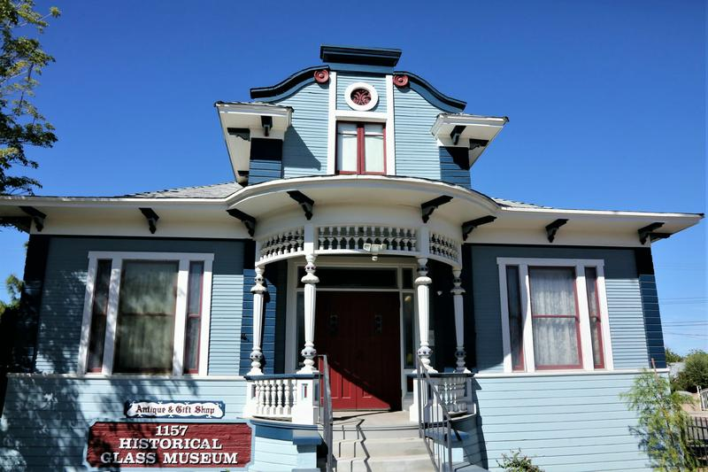

Project Overview
A digital home for a volunteer-led museum. I worked with Historical Glass Museum leadership to design, develop, and deploy a website that brings visitor information, museum collections, membership, and ways to support the organization into one experience.
Organization — Historical Glass Museum Foundation, a nonprofit in Redlands, California dedicated to preserving and sharing American-made glass. Project type — Museum website; UX/UI design and front-end development.
My role — Information architecture, interface and responsive design, accessibility considerations, stakeholder collaboration, front-end implementation, membership and donation pathways, digital communications, deployment, and ongoing maintenance.
Technology — HTML, CSS, and vanilla JavaScript, hosted on GitHub Pages. Donations link to Donorbox; membership uses a downloadable PDF. The contact form has provision for Formspree and Cloudflare Turnstile, with service setup still pending. Codex was part of my AI-assisted development workflow.
Objective — Help visitors plan a visit, help supporters understand their next step, and keep the website manageable for a small, volunteer-run organization.

The Problem
The museum serves several audiences with different priorities: visitors need practical information, prospective members need a clear application process, existing members need updates, and volunteers need ways to explain and maintain the museum’s services.
The brief called for intuitive navigation, readable content, accessible interactions, and understandable membership and donation pathways. Supporting older adults in museum leadership made clarity and ease of administration important requirements.
The available record documents implementation gaps and revisions within this project, including an early contact-page placeholder and later membership navigation fixes. It does not include a formal audit of the museum’s previous public website. I treat the needs above as design requirements, without attributing unverified usability problems to the former site.
Goals & Objectives
Make essential information easy to find — Give visitors direct routes to hours, location, collections, events, and contact details, with clear distinctions between visiting, joining, volunteering, and donating.
Support different devices and access needs — Build responsive layouts, readable type, visible keyboard focus, labeled controls, and straightforward navigation for desktop and mobile use.
Connect support and communication pathways — Present membership benefits and application instructions, link to online donations, provide newsletter access, and build a contact interface with clear delivery states.
Keep ownership practical — Use a static architecture, document service configuration, and avoid introducing an administration system or payment backend that the Foundation would have to maintain.
Research & Discovery
Stakeholder discovery — I collaborated with museum leadership on the website. The project brief identifies visitors, current and prospective members, and administrators as intended audiences, with accessibility and ease of maintenance as priorities. The repository also reflects the museum’s volunteer structure and its existing membership and communication processes.
Content and requirements — The site contains museum history, visitor information, collections, gift-shop information, member benefits, donation guidance, and newsletter resources. These materials establish the tasks the navigation and page hierarchy need to support.
Technical and operational constraints — The README specifies a static site with no build step and GitHub Pages publishing from the repository root. Membership applications are handled by downloadable PDF and mailed check; donations use an external Donorbox page. Contact delivery requires separately configured services.
Evidence boundary — No interview transcripts, surveys, usability-test reports, or wireframe files were found in the available project materials. This account draws on the stakeholder context supplied for the project, the implemented website, its README, and Git history.
To complete — Add the dates and format of your stakeholder discussions, the requirements leadership explicitly approved, and any documented audit or screenshots of the previous website.
Design Process
Information architecture — The primary navigation names concrete destinations: Home, About, Visit, Support, Donations, Newsletter, Gift Shop, Gallery, Resources, and Contact. Visit links directly to practical information on the homepage. Support groups volunteering, membership, donations, and community programs into expandable sections.
Content hierarchy — The homepage introduces the museum through a building photograph and concise description, followed by prominent “Plan Your Visit” and “Support the Museum” actions. Opening information, announcements, and visit details provide further entry points. The hierarchy places practical tasks alongside the museum’s cultural identity.
Responsive interface — The CSS starts with single-column layouts and introduces multi-column content at wider breakpoints. A labeled Menu control exposes navigation on smaller screens; desktop navigation wraps when needed. Buttons and form fields have explicit minimum heights, and images scale within their containers.
Readability and accessibility — The museum interface uses locally hosted Libre Baskerville, a 1.0625rem body size, and 1.65 line height. The source includes skip links, visible focus indicators, semantic headings, image descriptions, labeled form fields, and reduced-motion support. These are implemented accessibility considerations; they are not a claim of audited conformance.
Membership flow — A persistent Membership action links to the membership section, opens its accordion, and accounts for the sticky header when scrolling. Visitors can review benefits and levels, download the application, and mail it with a check. This is distinct from the online donation route.
Donation and communication flows — Donation buttons lead to Donorbox, with copy explaining that payments are handled there. The newsletter archive pairs issue-selection buttons with a PDF viewer. The contact interface includes validation, a character counter, and delivery-status messages; sending remains dependent on service configuration.
AI-Assisted Design & Development
I used Codex to cross-check my work, help produce code, and support code testing. I also used it to review accessibility and usability during development. This made AI assistance part of implementation and quality review, alongside my work with museum leadership.
Design ownership — I remained responsible for the information architecture, interface, responsive experience, and product decisions. Codex supported the code and the review of its behavior; the project’s stakeholder context and design requirements came from my collaboration with the museum.
Development workflow — I combined my own implementation work with AI-assisted code production and cross-checking. That gave me another way to examine code and explore changes during iteration. The available history records the resulting revisions, but does not identify a specific commit as AI-generated or establish how much time the tools saved.
Accessibility and usability review — I used Codex to help examine whether the implementation was accessible and usable. The site contains concrete measures such as focus indicators, labeled fields, skip links, and responsive navigation. AI-assisted review does not establish a formal accessibility audit or replace feedback from the people using the website; neither is documented in the available materials.
To complete — Add one specific example: the implementation task, the code or issue Codex surfaced, what you accepted or changed, and the checks you performed. Include any rejected suggestions or manual refinements, plus a concrete example of how the workflow accelerated experimentation if you can substantiate it.
Challenges & Iterations
Making membership consistently reachable — The September 27 change “Fix floating membership button” moved membership access from a navigation item to a fixed action and added viewport-safe sizing. The next change, “Fix membership and support navigation,” opened the correct accordion for #membership and adjusted scrolling for the sticky header. The implemented result is a direct route to the relevant content; no task-completion improvement was measured.
Revising the application process — An earlier implementation included an online application with membership levels, calculated check totals, and a confirmation state, pending external service setup. The October 1 revision removed that flow in favor of a printable application and mailed check. This reduced the application-specific code and service dependencies. The record does not state the stakeholder rationale, so that reason remains to be confirmed.
Handling an unconnected contact service — The contact page progressed from an early placeholder to labeled inputs, validation, status messages, and integration hooks. The current source checks configuration before sending and presents a phone fallback when services are unavailable. The result is an implemented contact interface with an explicit delivery limitation, rather than a verified working message service.
Keeping hosting straightforward — Early repository versions used Eleventy templates. A May 21 commit moved the project to static HTML, CSS, and JavaScript; the current README documents publishing the root directly on GitHub Pages. This removes the build step from the documented publishing workflow. Ease of administration by museum leadership has not been evaluated in a recorded usability study.
Final Solution
The live website brings the museum’s identity, visitor information, support options, and communications into a responsive static site. The links below open the implemented features.
Explore the live museum website
Homepage and navigation — Museum photography, visit-planning actions, hours, announcements, and a consistent navigation system establish the main visitor routes.
Membership and donations — A persistent membership link opens benefits, levels, and the printable application. A separate Donations page explains financial gifts, glass donations, and volunteering, and links to Donorbox for online giving.
Contact — The page combines labeled form fields with museum location, hours, a map, and telephone details. The form’s delivery service and security widget are not configured in the inspected live source; the interface provides a phone fallback.
Newsletter — Visitors can select issues and read them in an embedded PDF viewer. A separate page explains email opt-out requests. The inspected website does not contain a newsletter subscription signup or an integrated mailing-list service.
Mobile layouts — The implementation includes a compact menu, single-column content, full-width mobile buttons, and responsive imagery. These behaviors should be shown with actual device captures, rather than a fabricated device mockup.
To complete — Add desktop and mobile screenshots of the homepage and menu, the expanded membership section, donation options, the contact form and its delivery-status message, and the newsletter archive. Add a short walkthrough only if it shows actual implemented behavior.
Outcomes & Reflection
Delivered — A deployed museum website with organized visitor and collection information, responsive layouts, membership application access, an external donation pathway, a newsletter archive, and a contact interface. My remit also includes ongoing maintenance and digital communications.
Operational status — Membership remains a PDF-and-check process; the website links to Donorbox rather than processing payments. Contact delivery awaits provider configuration, and newsletter signup is not implemented in the inspected source. These boundaries matter when describing what the website can do for the Foundation today.
Reflection — The membership revisions illustrate how a product can move toward a simpler operational model. Building the interface also makes clear that a form or a newsletter page is only part of a communication service: delivery, ownership, and maintenance must be resolved with the organization.
Accessibility and collaboration — Readable layouts, understandable routes, and keyboard support are concrete implementation choices. The next useful evidence would be task-based sessions with visitors and museum administrators, including older adults, to learn whether those choices work as intended. That is a proposed next step, not research already completed.
No analytics, conversion results, or measured usability improvements are available for this case study. To complete — Add your own account of what leadership collaboration taught you, which maintenance tasks you perform, and what you would change in a future iteration.